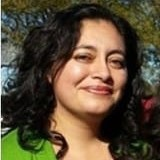

The East Bay Unbossed Slate
Please vote for all fourteen, plus Dan Wood on a separate ballot for Executive Committee. Expand All · Collapse All
Women:
("self-identified female")
- Andrea Luna Bocanegra (Oakland)
-  Andrea is an educator, a businesswoman, mother, community organizer and activist. As a daughter of an immigrant and parent of a child with a learning disability, she will fight for Universal Healthcare, Medicare for all, Housing and Tenant Rights, Protections for Immigrants, Justice Reform, Tuition-Free College and trade school and Environmental Protection Policies. She is the chair for the Toler Heights Neighborhood Association in Oakland, District 7, is on the school board of St. Bede Catholic School, Hayward, and is on the board of the City of Hayward’s Chamber of Commerce. She was a translator and advocate for Spanish-speaking farm workers in Salinas.
- Cheryl (Cheri) Johansen (Alameda)
-
 Johansen will fight for the Democratic Platform and hold the Party responsible to enact universal healthcare for all, end mass incarceration, adopt better policies to protect our planet, and safe and secure housing for all.
“Cheri” Johansen is a passionate community activist, and grandmother to six. A seasoned campaign organizer, most recently working to defeat a corporate-money measure, K, to permanently reduce renter’s rights, and for the District Attorney primary for Justice Reform in Alameda County. Johansen is working with the California Nurses, CNA, for Universal Healthcare. She is a founding member of the Alameda Progressives (a chapter of Our Revolution).
Johansen will fight for the Democratic Platform and hold the Party responsible to enact universal healthcare for all, end mass incarceration, adopt better policies to protect our planet, and safe and secure housing for all.
“Cheri” Johansen is a passionate community activist, and grandmother to six. A seasoned campaign organizer, most recently working to defeat a corporate-money measure, K, to permanently reduce renter’s rights, and for the District Attorney primary for Justice Reform in Alameda County. Johansen is working with the California Nurses, CNA, for Universal Healthcare. She is a founding member of the Alameda Progressives (a chapter of Our Revolution).
- Rabi'a Keeble (Oakland)
-
 Masters degree in Social Justice and Religious Leadership from Graduate Theological Union, Starr King School for the Ministry. Graduate certificate in Islamic Studies and Africana Church. An RN for many years, a member of CNA. Started the Womens Mosque in 2017, first of its kind in U.S. Organizer/advocate for the homeless, for survivors of police violence. Steering committee, Poor People Campaign. Advisor for KALWs program for womens issues in Islam. Activist of the Year by the Wellstone Democratic Club, 2017 City of Berkeley Recognition Award for her work with Mentally ill, Muslim Chaplain at Eden Hospital, Author of Muslim Woman Bill of Rights.
Masters degree in Social Justice and Religious Leadership from Graduate Theological Union, Starr King School for the Ministry. Graduate certificate in Islamic Studies and Africana Church. An RN for many years, a member of CNA. Started the Womens Mosque in 2017, first of its kind in U.S. Organizer/advocate for the homeless, for survivors of police violence. Steering committee, Poor People Campaign. Advisor for KALWs program for womens issues in Islam. Activist of the Year by the Wellstone Democratic Club, 2017 City of Berkeley Recognition Award for her work with Mentally ill, Muslim Chaplain at Eden Hospital, Author of Muslim Woman Bill of Rights.
- Lily (Laura) Kelly (Oakland)
- For ten years Lily was an organizer and program manager for environmental non-profits; today, she serves a large safety-net health center in Oakland as an administrator. Co-founded and co-organizes an Indivisible affiliate, “Refreshments and Resistance,” which has helped dozens of Oaklanders engage with local, State, and Federal policymaking in numerous ways, from regular calling of elected officials to canvassing in swing states. Having grown up as a queer woman in rural Florida, Lily appreciates the stark contrast between a state with conservative leadership and one with liberals at the helm. She believes that well-considered and data-driven progressive policies save lives, and help people thrive.
- Lisa LaFave (Cysewski) (San Leandro)
-
 37 years as a registered nurse and proud CNA (California Nurses Association) activist. As a fervent Bernie supporter and CNA delegate to the past two People's Summits, her primary priority is Universal Health Care in California and enhanced Medicare For All nationally. She is a Chief Nurse Representative for her union at San Leandro Hospital and the Chair of San Leandro's Professional Performance Committee working tirelessly to uphold strong union working conditions to ensure patient safety. Lisa is also committed to securing a living wage, affordable housing, free education, retirement with dignity, fighting income inequality and climate change initiatives.
37 years as a registered nurse and proud CNA (California Nurses Association) activist. As a fervent Bernie supporter and CNA delegate to the past two People's Summits, her primary priority is Universal Health Care in California and enhanced Medicare For All nationally. She is a Chief Nurse Representative for her union at San Leandro Hospital and the Chair of San Leandro's Professional Performance Committee working tirelessly to uphold strong union working conditions to ensure patient safety. Lisa is also committed to securing a living wage, affordable housing, free education, retirement with dignity, fighting income inequality and climate change initiatives.
- Nina Moore (Oakland)
-
 For 20 years Nina has run Everett and Jones, Jack London Square, feeding the homeless every night at the close of business. The restaurant has cultivated career paths for those who would otherwise not find employment. She's spearheaded toy drives, back-to-school drives, and Operation One Warm Coat. They've donated hot meals for the nonprofit We Lead Ours summer program and the 2016 Alameda Boys & Girls Club fundraiser. She's marched with Jesse Jackson for affirmative action, Black Lives Matter for Oscar Grant, Freddy Gray in Baltimore, and Occupy Oakland. Associate for the ACDCC and alternate state delegate for the 2016 Presidential election.
For 20 years Nina has run Everett and Jones, Jack London Square, feeding the homeless every night at the close of business. The restaurant has cultivated career paths for those who would otherwise not find employment. She's spearheaded toy drives, back-to-school drives, and Operation One Warm Coat. They've donated hot meals for the nonprofit We Lead Ours summer program and the 2016 Alameda Boys & Girls Club fundraiser. She's marched with Jesse Jackson for affirmative action, Black Lives Matter for Oscar Grant, Freddy Gray in Baltimore, and Occupy Oakland. Associate for the ACDCC and alternate state delegate for the 2016 Presidential election.
- Kiisha Orr (Oakland)
-

Men:
("other than self-identified female")
- Nestor Cuellas (Alameda)
-
 Nestor is a Union Representative/Organizer for SEIU Local 2015, California’s Long Term Care Workers’ Union. He grew up under the military dictatorship in Argentina. He was part of the opposition movement until the country won its democracy back. He also served on the board of the Estudillo Neighborhood Association, as a commissioner of the Human Services Commission, and on the board of the TOD (Transit-Oriented Development) for San Leandro. He is committed to universal health care, access to affordable housing, quality education for all, and workers’ rights. He's looking forward to moving the Democratic Party in the right direction and protecting working families.
Nestor is a Union Representative/Organizer for SEIU Local 2015, California’s Long Term Care Workers’ Union. He grew up under the military dictatorship in Argentina. He was part of the opposition movement until the country won its democracy back. He also served on the board of the Estudillo Neighborhood Association, as a commissioner of the Human Services Commission, and on the board of the TOD (Transit-Oriented Development) for San Leandro. He is committed to universal health care, access to affordable housing, quality education for all, and workers’ rights. He's looking forward to moving the Democratic Party in the right direction and protecting working families.
- Michael Fortes (Oakland)
-
 An administrative professional, a longtime participant in and supporter of the local San Francisco Bay Area music community, and a resident of the Bay Area since 2004. Michael actively participated in the 2016 presidential primary campaign season, served as a pledged at-large delegate at the 2016 Democratic National Convention, served as an assembly district delegate to the California state Democratic party for the 18th AD during the 2017-18 term, and continues to raise awareness and encourage more young Bay Area residents to participate in the political process.
An administrative professional, a longtime participant in and supporter of the local San Francisco Bay Area music community, and a resident of the Bay Area since 2004. Michael actively participated in the 2016 presidential primary campaign season, served as a pledged at-large delegate at the 2016 Democratic National Convention, served as an assembly district delegate to the California state Democratic party for the 18th AD during the 2017-18 term, and continues to raise awareness and encourage more young Bay Area residents to participate in the political process.
- Matt Hummel (Oakland)
-
 After the "Ghostship" fire, Matt co-founded the Oakland Warehouse Coalition. He pushed the city to bring porta-potties and sanitation stations to homeless encampments. (Sadly, many haven't been maintained in months.) It's a health crisis and it's a moral crisis. As Chair of the Cannabis Regulatory Commission, Matt worked to develop new policies that genuinely serve our people. Government is supposed to be a tool that we the people use together, to improve all of our lives. Our whole relationship to government needs to be completely renewed.
After the "Ghostship" fire, Matt co-founded the Oakland Warehouse Coalition. He pushed the city to bring porta-potties and sanitation stations to homeless encampments. (Sadly, many haven't been maintained in months.) It's a health crisis and it's a moral crisis. As Chair of the Cannabis Regulatory Commission, Matt worked to develop new policies that genuinely serve our people. Government is supposed to be a tool that we the people use together, to improve all of our lives. Our whole relationship to government needs to be completely renewed.
- Mike Katz-Lacabe (San Leandro)
-
 An IT security specialist and Director of Research for the Center for Human Rights and Privacy, advocating for privacy rights, government transparency and for the curtailment of the surveillance state. Active in Oakland Privacy Working Group and the San Leandro Democratic Club. Eight years on the San Leandro School Board, including two as Board President. Previously, coordinated Berkeley Amnesty International group, worked with School of the Americas Watch and co-founded Derechos Human Rights.
An IT security specialist and Director of Research for the Center for Human Rights and Privacy, advocating for privacy rights, government transparency and for the curtailment of the surveillance state. Active in Oakland Privacy Working Group and the San Leandro Democratic Club. Eight years on the San Leandro School Board, including two as Board President. Previously, coordinated Berkeley Amnesty International group, worked with School of the Americas Watch and co-founded Derechos Human Rights.
- Royl Roberts (Oakland)
-
 A Bay Area resident since 2004, Royl served on the Rent Review Advisory Committee (RRAC) and currently serves on the City of Alameda Disaster Council, City of Oakland- Violence Prevention Committee, the Board of the Martin Luther King, Jr. Freedom Center, as well as other Fraternal and Civic Organizations. He has BBA, MBA, and JD degrees. His goals are to promote Responsible Economic Growth, Sustainable Pathways Out Of Homelessness, Community Safety Through Responsible Policing And Community Empowerment and Leadership Through Environmentally Conscious Programs. Royl has the compassion and uprightness to represent those who may not have a voice to represent themselves.
A Bay Area resident since 2004, Royl served on the Rent Review Advisory Committee (RRAC) and currently serves on the City of Alameda Disaster Council, City of Oakland- Violence Prevention Committee, the Board of the Martin Luther King, Jr. Freedom Center, as well as other Fraternal and Civic Organizations. He has BBA, MBA, and JD degrees. His goals are to promote Responsible Economic Growth, Sustainable Pathways Out Of Homelessness, Community Safety Through Responsible Policing And Community Empowerment and Leadership Through Environmentally Conscious Programs. Royl has the compassion and uprightness to represent those who may not have a voice to represent themselves.
- Austin Tam (Alameda)
-
 Austin Tam is Community Developer staff of the Buena Vista United Methodist Church where he founded the Asian Pacific Disability Awareness Project. Living with a developmental disability, Austin has been been a champion for marginalized communities. He was a leader in the 2018 "NO on K Campaign" supporting renter's rights in Alameda. He is Chair of the Asian American Committee for the Pool of Consumer Champions (POCC) in Alameda County. In 2018 Tam received the "Unsung Hero" award POCC and the "Social Justice Champion Award" from Assemblyman Rob Bonta.
Austin Tam is Community Developer staff of the Buena Vista United Methodist Church where he founded the Asian Pacific Disability Awareness Project. Living with a developmental disability, Austin has been been a champion for marginalized communities. He was a leader in the 2018 "NO on K Campaign" supporting renter's rights in Alameda. He is Chair of the Asian American Committee for the Pool of Consumer Champions (POCC) in Alameda County. In 2018 Tam received the "Unsung Hero" award POCC and the "Social Justice Champion Award" from Assemblyman Rob Bonta.
- Dan Wood (Alameda)
-
A four-term delegate, 2005-2010 & 2017-present, Dan authored resolutions and contributed to the state Democratic party platform to bring about much-needed progressive ideals and framing. He spearheaded succcessful “No on 1A” campaign at 2009 convention. A leader in Alameda Progressives and Alameda Democratic Club. Volunteered and/or raised funds for many presidential, regional, and local campaigns since 2004, such as Sanders, Obama, Kerry, Dean, Debra Bowen, Jerry McNerney, Loni Hancock, and Pamela Price. Passionate about issues of social justice, single payer healthcare, campaign/election reform, and the environment, as well as CDP reform to bring about better representation from the grassroots.
Please also vote for Dan for E-board on separate ballot.
= Current delegate, part of the Groundswell Progressives elected in 2017.
Larger-resolution (up to 500px) images available for most candidates:
Bocanegra ·
Johansen ·
Keeble ·
Kelly ·
LaFave ·
Moore ·
Orr ·
Cuellas ·
Fortes ·
Hummel ·
Katz-Lacabe ·
Roberts ·
Tam ·
Wood
{kind=link}
{kind=link}
{kind=link}
{kind=link}
{kind=link}
{kind=link}
{kind=link}
{kind=link}
{kind=link}
{kind=link}
{kind=link}
{kind=link}
{kind=link}
{kind=link}